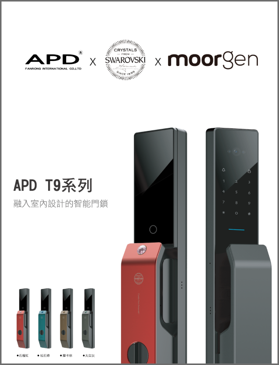

我們賣的不是產品 是一種責任
凡融1982~2023,至今。
2004年開始,專注於服務所有建案客戶,實際案例過萬戶，對於客戶的需求與精緻要求,秉持著客戶至上的精神以及服務經歷。
凡融國際有限公司自創立以來,長年致力於門用科技五金的研發、生產、銷售,持續的提供市場、能取向、品質取勝的產品,並取得多項專利及CNS防火級認證,以及領先業界通過SGS使用測試認證,不僅強化自身的實力,更取得世界級的製鎖集團ISEO、及TOPP的總代理。
技術持續提升，服務堅守最初的理念
從生產製造、購買、安裝、售後服務，一條龍的服務。
建設公司把守護大門主鎖與凡融合作
多年來讓消費者買得安心住得放心
如今我們能為你做的只有更多
技術支援 專業產銷
先進設備 穩定供貨
FAQ
目前網路上有三種破解方法較被人討論，分別是特斯拉線圈破解、卡片複製破解、膠片破解，但一般在大門緊閉的狀態下，膠片是很難通過數個直角、深入至門扇的另一端，且現在玄關門越做越厚不易破壞，除此之外，只要將不見的磁卡直接單個刪除，並定期修改密碼，就可以避免風險；而最多人擔心的特斯拉圈破解，可以選購由門鎖五金起家的凡融，就可避免有被破解的危險囉！
電子鎖故障常碰到的問題不外乎是面板感應失效、密碼失靈、機器當掉等等，若是碰到以上狀況，可先試著更換電池，透過重新開機或恢復原廠設定進行排除，建議鑰匙可以放在室外側以備不時之需，緊急狀況發生時，才不會被拒於家門外。若仍無法解決，可以打凡融客服電話為您服務。
以一般指紋鎖來說，我們所研發的電子鎖為機械電子鎖，採半機械式，市面上許多電子鎖都是幾個月至一年就需更換電池，我們則延長至18個月才需要更換電池，可以說是相當省電的電子鎖！
以一般指紋鎖來說，我們所研發的電子鎖為機械電子鎖，採半機械式，市面上許多電子鎖都是幾個月至一年就需更換電池，我們則延長至18個月才需要更換電池，可以說是相當省電的電子鎖！

我們電子鎖在沒電之前會語音提醒客戶需要更換電池了，如真的忘記換電池的話，我們室外側下方也有提供外接行動電源緊急供電，以備不時之需！
或是可以使用機械鑰匙就可以立即開門哦！
正常使用的情況下，電子鎖壽命通常可達6-8年，由於電子鎖的電子設備較為精密，建議可以使用由門鎖五金起家的台灣公司，對於門鎖的專業知識更為充足！
根據客戶所選的電子鎖款式有所不同，因此價格不一致，加上改裝門鎖會有一筆改裝費用，若是貪便宜而找便宜的電子鎖甚至自己安裝，恐怕很快會面臨故障問題，而維修與更換零件又是另一筆開銷，且門鎖是天天都需要使用的，直接找安心且有保固的廠商未來則可以省掉許多麻煩！
保固期間，經由現場檢修判斷為自然損壞，非人為因素或天災影響，現場會立即維修不需要把鎖帶回公司處理。